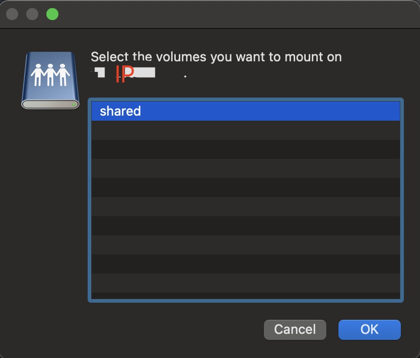

树莓派上 Samba 进行文件共享
文章目录
前言
今天讲一下如何在树莓派上搭建 Samba 进行文件共享。
安装
|
|
配置文件在 /etc/samba/smb.conf ，但是你到这个路径一看，发现没有
查了半天资料终于在Manjaro使用Samba实现局域网内跨系统文件共享 - 简书中找到了办法，需要安装 manjaro=settings-samba
|
|
安装好了这下就有了。
添加用户
|
|
这里要注意，如果用户不存在你的电脑上，这样是不能添加成功的，以 test 为例，会报如下错误
|
|
如果你不确定系统中有哪些用户可以使用如下命令查看
|
|
添加新用户
如果你要添加新用户可以创建一个新组，然后添加新用户
|
|
这时候再使用 smbpasswd -a test1 就能成功添加用户了
配置
在 home 下创建一个 share 的文件夹用来共享文件
打开 /etc/samba/smb.conf 把下面内容添加到末尾，路径需要根据自己的情况进行修改。
|
|
连接
配置好了就可以开始连接了。
打开 Finder 使用快捷键 cmd k 打开连接服务器界面
在输入框中输入 smb://ip 然后选择连接，接着输入账号密码，就能看到 Samba 中配置的目录

总结
Samba 用起来挺复杂，有很多配置，但是有些地方又需要用到，比如摄像头备份之类的。